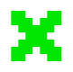

определение местоположения устройства
------------------100%
анализ последней информации о планете
------------------100%
соединение с центром спасения планеты
---- 20%
public static ArrayList inputListStrings() throws IOException {
BufferedReader reader = new Buffered Reader(new Input Stream Reader(System.in)); Array List arrayList = new ArrayList<>(); for (int i = 0; i < 10; i++) { arrayList. add(i, reader. readLine()); } return arrayList;
О ЦЕНТРЕ

Центра занимается восстановление экосистемы галактики и защитой
граждан от заражения и катастроф, вызванных ими.
«Чуксулуб» располагает огромными ресурсами, а его точки
размещены на всех особо значимых планетах.
Наша миссия — восстановить природный баланса и порядок в
галактике Млечный путь и спасти как можно больше людей и
представителей флоры и фауны Чуксулуб» располагает огромными
ресурсами, а его точки размещены на всех особо значимых планетах.
Наша миссия — восстановить природный баланса и порядок в
галактике Млечный путь и спасти как можно больше людей и
представителей флоры и фауны
Организация делится на три части: исследовательский центр - научная часть, занимается исследованиями экологического состояния галактики разведывательная группа - занимается сбором материалов для исследовательского центра служба спасения - приезжает
Статистика
Расширения за 3386 год
исслед. центры
группы спасения
группа разведки
спасенные планеты
исследованные планеты
заброшенные/погибшие планеты
13↑
34↑
45↓
05↓
78↑
14↓
Запуск сервера
import java.io.DataInputStream; import java.io.DataOutputStream; import java.io.IOException; import java.net.ServerSocket; import java.net.Socket; public class TestAsServer { /** * * @param args * @throws InterruptedException */ public static void main(String[] args) throws InterruptedException { // стартуем сервер на порту 3345 try (ServerSocket server= new ServerSocket(3345)){ // становимся в ожидание подключения к сокету под именем - "client" на серверной стороне Socket client = server.accept(); // после хэндшейкинга сервер ассоциирует подключающегося клиента с этим сокетом-соединением System.out.print("Connection accepted.");
DataOutputStream out = new DataOutputStream(client.getOutputStream()); System.out.println("DataOutputStream created"); DataInputStream in = new DataInputStream(client.getInputStream()); System.out.println("DataInputStream created"); while(!client.isClosed()){ System.out.println("Server reading from channel"); (inputstream) String entry = in.readUTF(); /System.out.println("READ from client message - "+entry);
Наши сотрудники
Точки организации
Предупреждение
Планета А-564
Перенасыщение кислородом районов 5-7 из-за неестественной активности кисло цветов и бегунов
Надевайте устройство кислородного обеспечение при долгом выходе на улицу